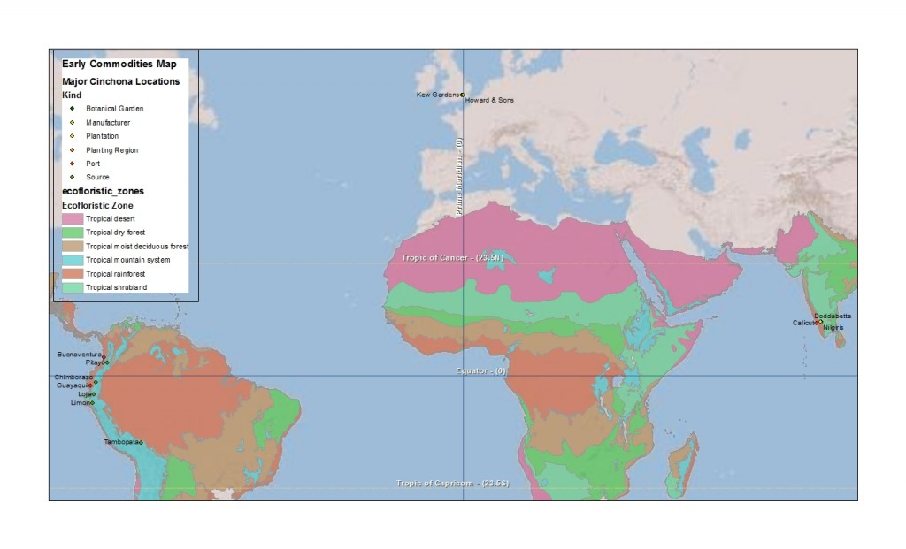

{kind=link}

Over the past few weeks I've been collecting together documents on some of the global commodity that supplied factories in the Thames Estuary during the nineteenth century to help me start writing a paper for the ASEH in March. Cinchona bark is one of the most interesting natural resources consumed in West Ham's industry throughout the nineteenth century. Cinchona bark, which was native to the tropical mountain forest in eastern South America contained quinine alkaloids (still found in tonic water) used to treat fevers (particularly as the British expanded their empire into tropical zones with higher risks of malaria). Howard & Sons, founded at the end of the 18th century and located near Startford (East London) from 1805, developed into a leading manufacture of quinine during the 19th century. During the mid-century, Britain's source of the cinchona bark shifted from the forests of Bolivia, Peru, Equator and New Granada (Columbia) to plantations in India and Java. The history of Clements Markham's efforts to steal/save cinchona seeds and trees from the forests of Peru and the role of Kew Gardens in facilitating this kind of biotic transfer are well developed in the history of science literature [see below], but I believe there is little on the active role of industrialists, like John Eliot Howard, in studying the botany of his major raw material and seeking more stable supply chain. This research project is looking to find connections between industrial development in the Thames Estuary and environmental transformations in other parts of the globe and based on my early research, it seems that the Howards were among the most active industrialists in this regard. The map above attempts to georeference the description of the establishing India's cinchona plantations in George King's A Manual of Cinchona Cultivation in India (1880). As the title to this post suggests, this is an early effort to start thinking about how to use GIS to map global commodity flows in the nineteenth century. -- Brockway, Lucile H. Science and colonial expansion: the role of the British Royal Botanic Gardens. Yale University Press, 2002.Philip, Kavita. “Imperial Science Rescues a Tree: Global Botanic Networks, Local Knowledge and the Transcontinental Transplantation of Cinchona.” Environment and History 1 (June 1995): 173-200.